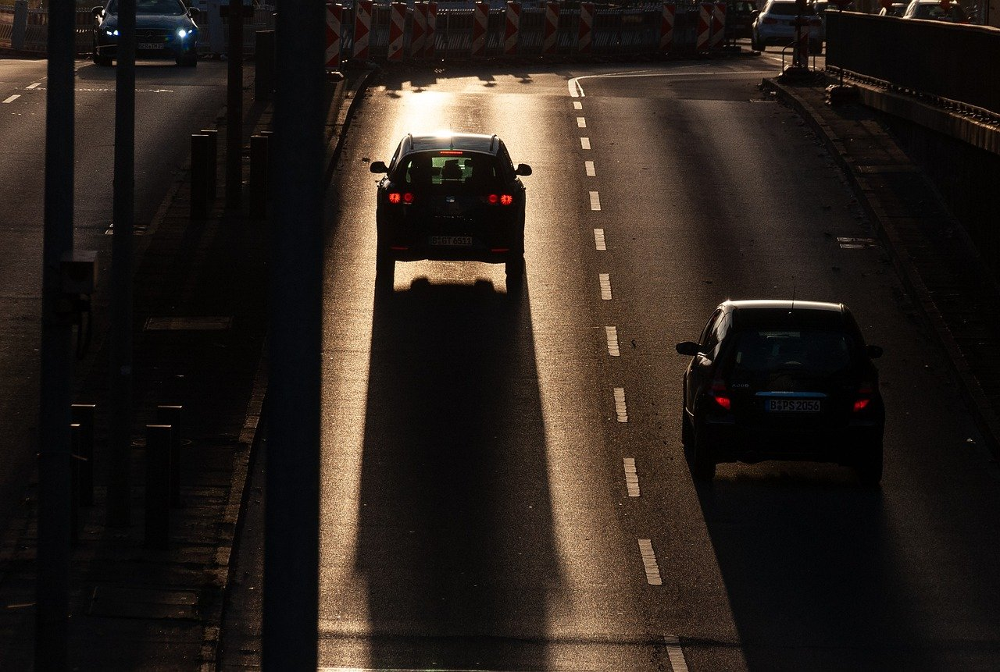

Studenter ved Høgskolen i Østfold står overfor betydelige utfordringer når det gjelder pendling til skolen. Mange av dem bor i nærliggende byer som Sarpsborg og Moss, og bruker betydelig tid og penger av studielånet på transport. Dette påvirker naturligvis deres økonomi, men også deres tid i studiehverdagen. I forbindelse med denne saken har vi nært i kontakt med flere studenter for å fortelle deres historie.

Wiktoria Raszkowska, en 23 år gammel kvinnelig student som studerer internasjonal kommunikasjon, pendler fra Sarpsborg til Halden med buss. Hun bruker mellom 1,5 til 2 timer hver vei, og transporten koster henne rundt 500 kroner i måneden. Prisen klager hun ikke på, men Wiktoria opplever at busstilbudet er dårlig, med forsinkelser og få avganger, noe som resulterer i mye ventetid, som hun ellers kunne brukt på skolearbeidet.
“Mari” og “Johanne” (anonyme) fra Sarpsborg på 21 og 22 år som studerer økonomi og ledelse, velger derimot å kjøre egne biler til skolen for å slippe det de kaller “Et dårlig kollektivtilbud som tar for lang tid”. De bruker ca. 25-30 minutter hver vei til campus og betaler mellom 1500 til 2000 kroner i bensin pr. måned, samt 25 kroner i bompenger daglig, noe som kan gi en stiv prislapp på 2500kr i måneden for studentene. “Mari” finner busstilbudet utilstrekkelig og foretrekker bil på grunn av tidsbesparelsen. “Johanne” forklarer at hun foretrekker bil på grunn av fleksibiliteten, men innrømmer at det kan være dyrt for en student med et stramt månedsbudsjett på 10.500 kr fra lånekassen.

For de som bor på campus, som Markus Olsen, er situasjonen annerledes. Markus betaler 6290 kroner (inkludert strøm) i leie og har valgt å bo på campus for å unngå styret med pendling og for å være en del av et bedre studiemiljø. Selv om han er fornøyd med campuslivet, synes han prisen er høy i forhold til hva man får.
For å forbedre situasjonen for studentene, foreslås det flere tiltak fra studentene: bedre kollektivtilbud med hyppigere avganger og direkte busser, oppfordring til samkjøring, økt statlig støtte og rabatter på kollektivtransport, samt flere og billigere boligtilbud på eller nær campus.
Disse tiltakene kan hjelpe studentene med å spare tid og penger, slik at de kan fokusere mer på studiene og mindre på pendlingen eller økonomien.